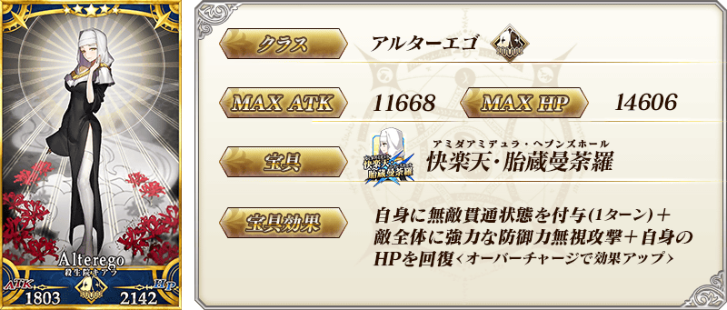
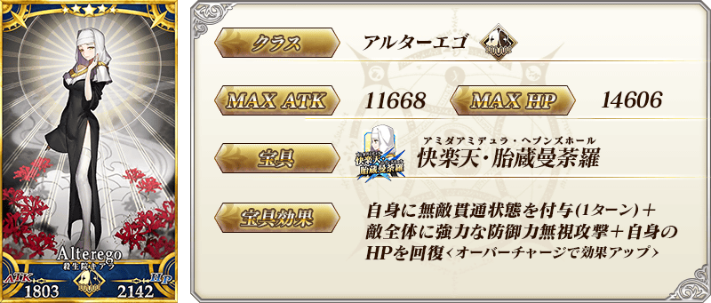
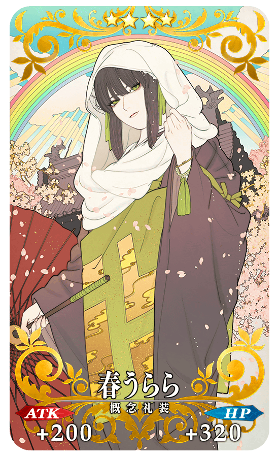
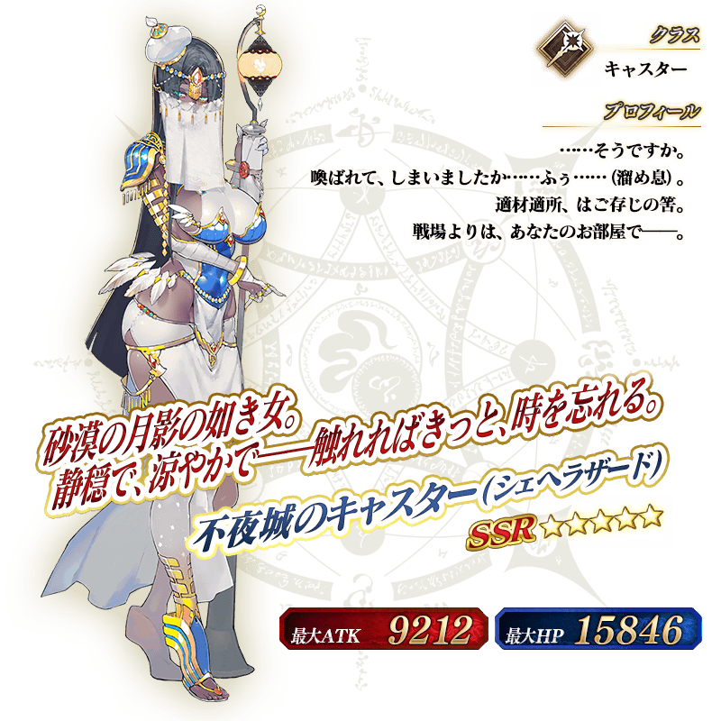

◆「徳川廻天迷宮 大奥Pick Up2召喚(每日交替)」期間◆
期間:2019年4月3日(三) 17:00～4月17日(三) 11:59
舉辦期間限定「徳川廻天迷宮 大奥Pick Up2召喚(每日交替)」！
※未通過第2部 第3章「Lostbelt No.3 人智統合真國 SIN 紅之月下美人」的狀態也能進行「徳川廻天迷宮 大奥Pick Up2召喚(每日交替)」。
在期間限定活動「徳川廻天迷宮 大奥」活躍的期間限定Servant「★5(SSR)殺生院祈荒」登場！
本次包含上述Pick Up 3位的Servant！
「★5(SSR)不夜城的Caster(雪赫拉莎德)」「★5(SSR)殺生院祈荒」以每日交替Pick Up！
「★4(SR)柳生但馬守宗矩」常駐Pick Up。
詳情請在聖晶石召喚畫面左下的召喚詳細確認。
「★5(SSR)姫様行脚」「★4(SR)春うらら」「★3(R)火消魂」做為期間限定概念禮裝登場！
裝備上述3種概念禮裝的話，在期間限定活動「徳川廻天迷宮 大奥」中會提升活動道具的掉落獲得數。
◆有關Servant的注意◆
※殺生院祈荒在Pick Up期間結束後不會追加到故事召喚。
※請注意「徳川廻天迷宮 大奥Pick Up2召喚(每日交替)」做為每日交替，殺生院祈荒就算Pick Up期間中也會有不被抽出的日子。
※Pick Up期間中，柳生但馬守宗矩就算通過各章前也能入手。
※不夜城的Caster(雪赫拉莎德)、柳生但馬守宗矩在Pick Up期間結束後仍會在故事召喚被抽出。
※關於隱藏真名尚未判明的Servant，透過主線關卡的進行會讓Servant及一部份份寶具的名稱變化。
◆有關Servant真名的注意◆
在2018年12月31日(二) 23:00以後新配信的主線故事及期間限定活動、一部份關卡、宣傳活動及召喚中，會顯示隱藏真名的對象Servant真名。
※已經配信的主線故事、復刻活動、一部份關卡中不在此限。
◆有關概念禮裝的注意◆ ※火消魂在Pick Up期間中，也能靠友情點數召喚獲得。 ※請注意自友情點數召喚抽出的火消魂在自動變還設定登錄★3(R)概念禮裝的情況，會變成自動變還的對象。
Pick Up期間中，期間限定Servant、Pick Up Servant、期間限定概念禮裝的出現機率提升！
10次召喚中確定1張★4(SR)以上和確定1位★3(R)以上的Servant！
※確定★4(SR)以上包含Servant和概念禮裝。
※本頁面圖片皆為開發中。會有與實際圖片有所差異的情況。
| 每日交替Pick Up期間 | 每日交替Pick Up內容 |
|---|---|
| 4月3日(三) 17:00～ 4月6日(六) 22:59 |
殺生院祈荒 柳生但馬守宗矩 |
| 4月6日(六) 23:00～ 4月8日(一) 22:59 |
不夜城的Caster(雪赫拉莎德) 柳生但馬守宗矩 |
| 4月8日(一) 23:00～ 4月11日(四) 22:59 |
不夜城的Caster(雪赫拉莎德) 殺生院祈荒 柳生但馬守宗矩 |
| 4月11日(四) 23:00～ 4月13日(六) 22:59 |
殺生院祈荒 柳生但馬守宗矩 |
| 4月13日(六) 23:00～4月14日(日) 22:59 | 不夜城的Caster(雪赫拉莎德) 柳生但馬守宗矩 |
| 4月14日(日) 23:00～ 4月17日(三) 11:59 |
不夜城的Caster(雪赫拉莎德) 殺生院祈荒 柳生但馬守宗矩 |
※請注意會以每日交替變更Pick Up的Servant。

 



 ※上述「★4(SR)柳生但馬守宗矩」的卡面為靈基再臨第2階段。
※上述「★4(SR)柳生但馬守宗矩」的卡面為靈基再臨第2階段。


|
★★★★★SSR
|

|  |
★★★★SR
|


|
★★★R |



介紹「★5(SSR)殺生院祈荒」的寶具演出！
在「Fate/Grand Order」官方網站內的公告中，以影片公開寶具演出，敬請確認。
介紹「★5(SSR)不夜城的Caster(雪赫拉莎德)」「★4(SR)柳生但馬守宗矩」的寶具演出！
在「Fate/Grand Order」官方網站內的公告中，以影片公開寶具演出，敬請確認。
其他還有，期間限定活動「徳川廻天迷宮 大奥」和Pick Up新Servant「★5(SSR)伽摩」的期間限定「徳川廻天迷宮 大奥Pick Up召喚」同時舉辦！
關於詳情，請自下述橫幅確認。